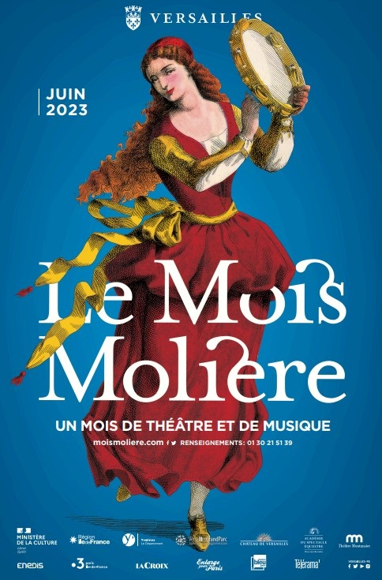

Le Mois MOLIERE
Heureusement, en cette période de juin , le MOIS MOLIERE bat son plein à Versailles. Je le consacre entièrement pour exercer mon poste d’accueil auprès du public et des artistes qui viennent au CARRE A LA FARINE
Je retrouve le sourire, et partage mes activités avec Mme L., Catherine, mon ancienne responsable de l’Espace RICHAUD et les bénévoles du MOIS Molière.
Le CARRE A LA FARINE accueille les intermittents et artistes de spectacles tels que les musiciens, chanteurs groupe de théâtre en fin de soirées et le dimanche après-midi.
En ce début de juin, il faut installer les chaises pour les spectateurs, mettre en place les affiches du mois MOLIERE des années précédentes, accueillir les techniciens qui viennent installer les estrades, la sono et l’éclairage.
Au cours de mes premières années au CARRE A LA FARINE, mes deux collègues, José et Christian m’avaient enseigné les rudiments de la préparation de ce spectacle ainsi que les notions de sécurité lors des représentations.
Mme L. sait mener sa troupe d’une main de fer pour toute l’organisation de ce festival. Chaque ordre doit être minutieusement respecté au risque de se faire rappeler à l’ordre. La première année cela fut difficile de m’incruster au cœur de cette organisation millimétrée. Puis au fil des années, on me fait confiance. Aujourd’hui, je me sens vraiment dans mon élément. Je suis entourée de bénévoles avec qui j’ai de bons rapports. Mme L. compte beaucoup sur mon expérience et j’apprécie les relations avec les artistes.
EN 2022, Catherine entre dans l'organisation du mois MOLIERE pour seconder Mme L.. C’est ainsi que je la retrouve aux mois de juin.
Le mois MOLIERE au CARRE A LA FARINE, c’est environ 20 représentations pour lesquelles j’accueille public et artistes. Un programme intense que je partage heureusement avec les bénévoles et qui me fait oublier mes tâches de surveillante aux Musée Lambinet et à l’espace RICHAUD.
J’apprécie chaque année à accueillir les artistes de cette grande manifestations musicale et théâtrale. Les artistes sont très reconnaissants de mon travail et sont tristes de me voir quitter la scène du CARRE A LA FARINE.